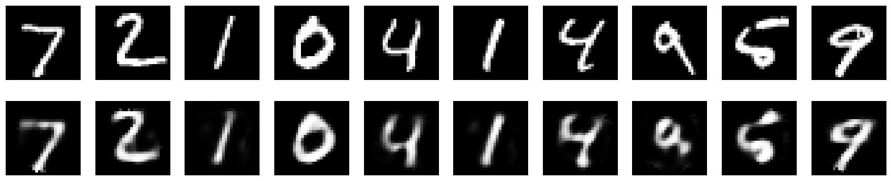
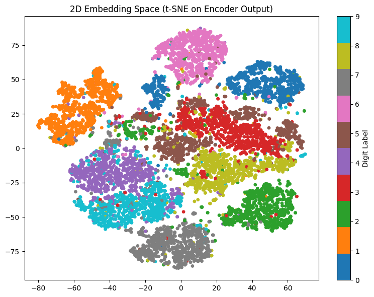
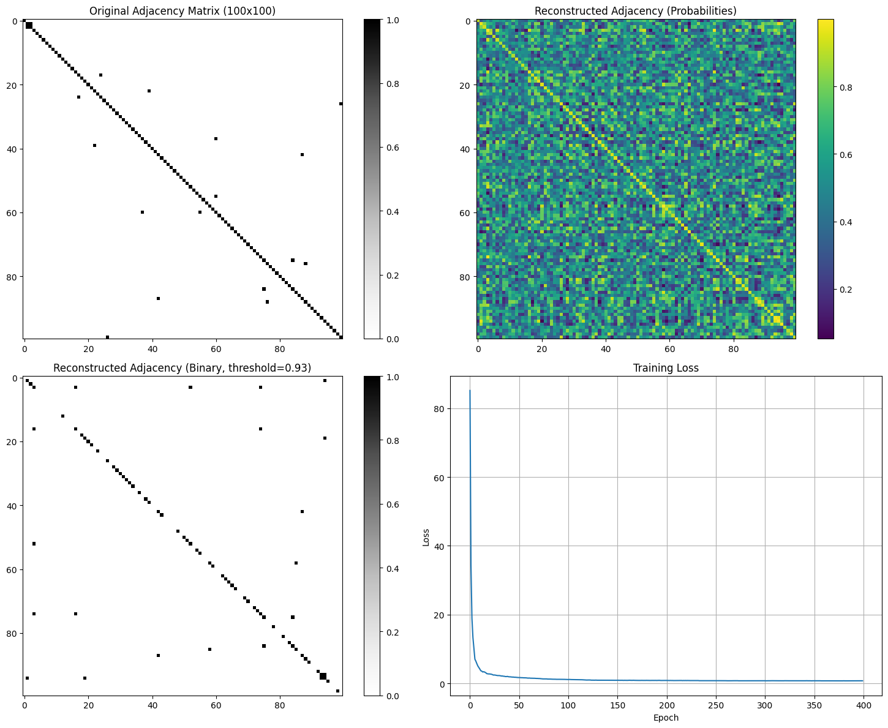
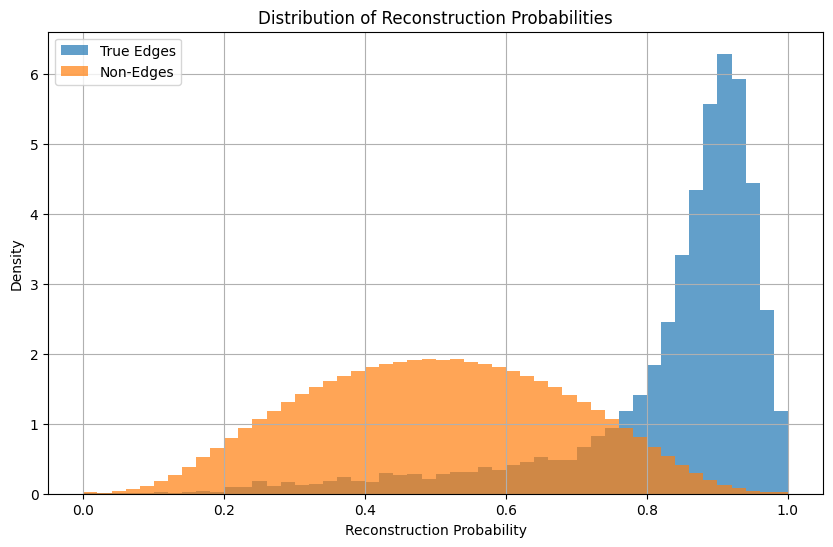
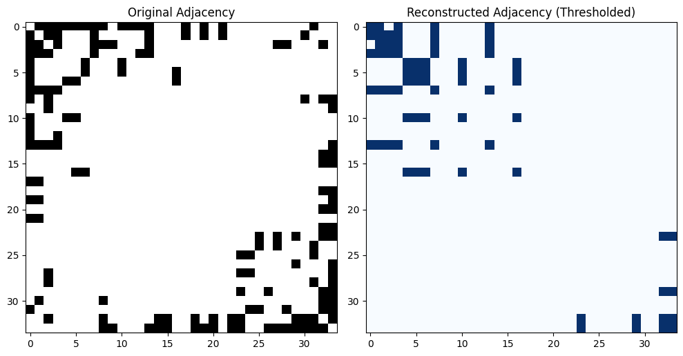
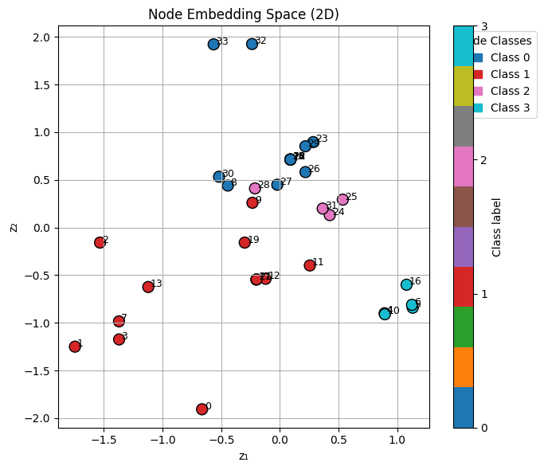

AutoEncoder#
Introduction#
Autoencoders are a class of unsupervised neural networks that are trained to reconstruct their input. The network is composed of two main parts:
an encoder that compresses the input data into a lower-dimensional representation (also known as the latent code or embedding),
and a decoder that attempts to reconstruct the original input from this latent representation.
The objective of the autoencoder is to minimize the difference between the input and its reconstruction. This forces the network to learn the most salient and informative features of the input data, as only the most meaningful patterns can be retained through the limited capacity of the latent space (often called the bottleneck).
Autoencoders are particularly useful for:
Dimensionality reduction
Denoising
Anomaly detection
Pretraining for downstream tasks (feature extraction)
Note for graph data: On graphs, autoencoders can learn embeddings for nodes or entire graphs, which can be used for tasks such as link prediction, node classification, or graph clustering. Graph Autoencoders (GAEs) extend this idea using GNN-based encoders.
Mathematical Formulation of an Autoencoder#
Let \(x \in \mathbb{R}^n\) be an input vector (e.g., a flattened image).
An autoencoder consists of two parts:
Encoder: Maps the input \(x\) to a lower-dimensional hidden representation \(z \in \mathbb{R}^m\), where \(m < n\):
\[ z = f_{\theta}(x) = \sigma(W_e x + b_e) \]Decoder: Attempts to reconstruct the original input from the latent representation \(z\):
\[ \hat{x} = g_{\phi}(z) = \sigma(W_d z + b_d) \]
Here:
\(\theta = \{W_e, b_e\}\) are the encoder parameters,
\(\phi = \{W_d, b_d\}\) are the decoder parameters,
\(\sigma\) is a non-linear activation function (e.g., ReLU, sigmoid).
Loss Function#
The goal is to minimize the reconstruction loss between the input \(x\) and the output \(\hat{x}\).
1. Mean Squared Error (MSE):#
Used for real-valued inputs.
2. Binary Cross-Entropy (BCE):#
Used when \(x_i \in [0, 1]\), such as with normalized grayscale images.
Training Objective and Embedding Calculation#
Minimize the average reconstruction loss over all training samples:
Where:
\(N\) is the number of training samples,
\(x^{(j)}\) is the \(j\)-th input sample,
\(\hat{x}^{(j)} = g_\phi(f_\theta(x^{(j)}))\) is the reconstruction.
Key point: The embedding \(z^{(j)} = f_\theta(x^{(j)})\) is obtained as the output of the encoder. Its quality is indirectly optimized by minimizing the reconstruction loss via gradient descent on the network parameters \(\theta\) and \(\phi\).
As training progresses, the embeddings become more informative and capture the most salient features of the input data.
Gradient-Based Update#
During training, the network parameters are updated using backpropagation:
\(\eta\) is the learning rate.
Gradients are computed automatically with respect to the loss.
The embeddings \(z = f_\theta(x)\) improve indirectly as the network weights are optimized.
Optional Regularization#
To improve generalization, regularization terms can be added:
L2 weight decay:
\[ \mathcal{L}_{\text{total}} = \mathcal{L}(x, \hat{x}) + \lambda \left( \|W_e\|_2^2 + \|W_d\|_2^2 \right) \]Sparsity penalty: Encourages sparse activations in the latent space.
Variants of Autoencoders#
Denoising Autoencoder: Learns to reconstruct clean inputs from noisy versions.
Sparse Autoencoder: Encourages sparse latent codes for more interpretable embeddings.
Variational Autoencoder (VAE): Probabilistic autoencoder that learns distributions over latent variables.
Graph Autoencoder (GAE): Uses GNNs to encode node or graph information into embeddings.
#pip install torch==2.4.1 torchvision==0.15.2 --index-url https://download.pytorch.org/whl/cpu
#pip install torch-scatter -f https://data.pyg.org/whl/torch-2.4.1+cpu.html
#pip install torch-sparse -f https://data.pyg.org/whl/torch-2.4.1+cpu.html
#pip install torch-geometric
import torch
import torch.nn as nn
import torch.optim as optim
from torchvision import datasets, transforms
#transforms: Converts images to PyTorch tensors.
from torch.utils.data import DataLoader
import matplotlib.pyplot as plt
# Define Autoencoder model
class Autoencoder(nn.Module):
def __init__(self, input_dim=784, encoding_dim=32):
# Input dimension = 784: 28×28 grayscale image flattened into a 1D vector.
#Encoding dimension = 32: Compresses the 784 input values into just 32 values (features).
super(Autoencoder, self).__init__()
self.encoder = nn.Sequential( # Reduces dimensionality: 784 → 32 and Uses a linear layer followed by ReLU activation.
nn.Linear(input_dim, encoding_dim),
nn.ReLU()
)
self.decoder = nn.Sequential( # Reconstructs input: 32 → 784 ,
# Uses a linear layer followed by a sigmoid activation (to keep outputs in [0,1] range,
# matching the input pixel normalization).
nn.Linear(encoding_dim, input_dim),
nn.Sigmoid()
)
def forward(self, x): # Passes input through encoder, then decoder, and returns the reconstruction.
z = self.encoder(x)
out = self.decoder(z)
return out
# Load dataset
transform = transforms.ToTensor()
train_data = datasets.MNIST(root='./data', train=True, download=True, transform=transform)
test_data = datasets.MNIST(root='./data', train=False, download=True, transform=transform)
train_loader = DataLoader(train_data, batch_size=256, shuffle=True) # shuffle=True for training to help generalization.
test_loader = DataLoader(test_data, batch_size=256, shuffle=False)
# Model, Loss, Optimizer
# model: Instantiates the autoencoder.
# criterion: Uses Mean Squared Error (MSE) as reconstruction loss (difference between input and output).
# optimizer: Uses Adam optimizer with learning rate 0.001.
model = Autoencoder()
criterion = nn.MSELoss()
optimizer = optim.Adam(model.parameters(), lr=1e-3)
# Training:
# For 20 epochs (training iterations):
# Load a batch of images (imgs).
# Flatten each 28×28 image into a vector of size 784.
# Pass images through the autoencoder.
# Compute reconstruction loss between imgs and outputs.
# Backpropagate and update model weights.
for epoch in range(20):
for imgs, _ in train_loader:
imgs = imgs.view(imgs.size(0), -1)
outputs = model(imgs)
loss = criterion(outputs, imgs)
optimizer.zero_grad()
loss.backward()
optimizer.step()
print(f"Epoch [{epoch+1}/20], Loss: {loss.item():.4f}")
Epoch [1/20], Loss: 0.0519
Epoch [2/20], Loss: 0.0383
Epoch [3/20], Loss: 0.0313
Epoch [4/20], Loss: 0.0256
Epoch [5/20], Loss: 0.0239
Epoch [6/20], Loss: 0.0198
Epoch [7/20], Loss: 0.0185
Epoch [8/20], Loss: 0.0197
Epoch [9/20], Loss: 0.0185
Epoch [10/20], Loss: 0.0180
Epoch [11/20], Loss: 0.0176
Epoch [12/20], Loss: 0.0200
Epoch [13/20], Loss: 0.0165
Epoch [14/20], Loss: 0.0162
Epoch [15/20], Loss: 0.0179
Epoch [16/20], Loss: 0.0181
Epoch [17/20], Loss: 0.0168
Epoch [18/20], Loss: 0.0175
Epoch [19/20], Loss: 0.0179
Epoch [20/20], Loss: 0.0173
# Visualization
import numpy as np
model.eval() #Switches the model to evaluation mode. This disables layers like Dropout or BatchNorm that behave differently during training vs. inference.
with torch.no_grad():
# torch.no_grad: Prevents PyTorch from tracking operations for gradient computation. Reduces memory usage and speeds up computation.
# Useful because we’re not training — just evaluating.
imgs, _ = next(iter(test_loader)) # Gets a single batch from the test set.
imgs = imgs.view(imgs.size(0), -1) # Flattens each image from 28×28 to 784-dim vector.
outputs = model(imgs)
n = 10
plt.figure(figsize=(20, 4))
for i in range(n):
ax = plt.subplot(2, n, i + 1)
plt.imshow(imgs[i].reshape(28, 28).numpy(), cmap='gray') # Original images
ax.axis('off')
ax = plt.subplot(2, n, i + 1 + n)
plt.imshow(outputs[i].reshape(28, 28).numpy(), cmap='gray') # Reconstructed images
ax.axis('off')
plt.show()

from sklearn.manifold import TSNE
model.eval()
embeddings = []
labels = []
with torch.no_grad():
for imgs, lbls in test_loader:
imgs = imgs.view(imgs.size(0), -1)
z = model.encoder(imgs)
embeddings.append(z)
labels.append(lbls)
# Stack all batches
embeddings = torch.cat(embeddings, dim=0).cpu().numpy()
labels = torch.cat(labels, dim=0).cpu().numpy()
# Reduce to 2D using t-SNE
tsne = TSNE(n_components=2, init='pca', random_state=42)
z_2d = tsne.fit_transform(embeddings)
# Plot
import matplotlib.pyplot as plt
plt.figure(figsize=(8, 6))
scatter = plt.scatter(z_2d[:, 0], z_2d[:, 1], c=labels, cmap='tab10', s=15)
plt.colorbar(scatter, label="Digit Label")
plt.title("2D Embedding Space (t-SNE on Encoder Output)")
plt.tight_layout()
plt.show()

# Assume the model is already trained and ready
# Set the model to evaluation mode
model.eval()
# Get one batch from the test data
dataiter = iter(test_loader)
images, labels = next(dataiter)
# Prepare (flatten) the images
images_flat = images.view(images.size(0), -1)
# Get the embeddings from the encoder
with torch.no_grad():
embeddings = model.encoder(images_flat)
# Display the first 10 embeddings
print("Embedding for first 10 test images:")
print(embeddings[:10])
Embedding for first 10 test images:
tensor([[10.0645, 7.0116, 7.3378, 0.0000, 0.0000, 1.0820, 0.0000, 11.0301,
1.8621, 6.5599, 16.3086, 6.1684, 5.6763, 11.9695, 4.9848, 0.0000,
0.0000, 15.5984, 14.1261, 0.0000, 10.4217, 0.0000, 0.0000, 0.0000,
3.6606, 0.0000, 0.0000, 3.3472, 8.9203, 12.1496, 6.7739, 5.9821],
[ 6.8650, 14.0952, 1.7086, 0.0000, 0.0000, 15.6798, 0.0000, 8.3858,
12.4977, 7.1092, 4.7880, 20.6311, 14.3042, 9.9900, 8.9005, 0.0000,
0.0000, 10.7787, 8.7382, 0.0000, 4.8349, 0.0000, 0.0000, 0.0000,
9.2421, 0.0000, 0.0000, 12.5975, 15.5176, 11.6455, 9.2759, 5.2672],
[ 2.8533, 3.4799, 8.7332, 0.0000, 0.0000, 1.1526, 0.0000, 2.0977,
5.4279, 5.3094, 1.3333, 4.8491, 3.4279, 2.7164, 1.8434, 0.0000,
0.0000, 2.8562, 3.8884, 0.0000, 4.2940, 0.0000, 0.0000, 0.0000,
5.8955, 0.0000, 0.0000, 7.3616, 8.0028, 8.5125, 5.8846, 0.6022],
[15.6658, 17.3698, 8.5517, 0.0000, 0.0000, 15.9378, 0.0000, 17.2939,
11.5449, 8.7056, 19.6350, 15.4187, 17.3878, 15.8153, 18.6641, 0.0000,
0.0000, 18.1921, 19.5419, 0.0000, 7.4241, 0.0000, 0.0000, 0.0000,
9.2859, 0.0000, 0.0000, 18.2990, 21.4147, 19.2179, 24.8754, 25.5607],
[12.6274, 5.0870, 3.1825, 0.0000, 0.0000, 9.8519, 0.0000, 12.7731,
4.8308, 11.0953, 13.6983, 7.5117, 4.7964, 7.0846, 8.9727, 0.0000,
0.0000, 8.2157, 6.1299, 0.0000, 3.4500, 0.0000, 0.0000, 0.0000,
3.3953, 0.0000, 0.0000, 6.3379, 5.1716, 1.4237, 9.0594, 6.6614],
[ 3.5555, 3.9826, 10.6431, 0.0000, 0.0000, 2.3858, 0.0000, 5.5089,
5.2888, 6.9625, 2.2344, 5.6036, 4.4115, 5.0180, 1.9712, 0.0000,
0.0000, 4.8868, 5.5070, 0.0000, 5.0758, 0.0000, 0.0000, 0.0000,
8.2457, 0.0000, 0.0000, 7.7977, 12.7603, 10.6118, 7.7586, 0.4719],
[14.3292, 1.9815, 2.7332, 0.0000, 0.0000, 8.8116, 0.0000, 7.5585,
0.6851, 9.1693, 7.3021, 6.9185, 9.2957, 5.8499, 4.3222, 0.0000,
0.0000, 15.5675, 7.5329, 0.0000, 10.2110, 0.0000, 0.0000, 0.0000,
6.9219, 0.0000, 0.0000, 5.1089, 7.4462, 5.7243, 3.9662, 4.7292],
[ 8.1628, 6.2117, 5.2808, 0.0000, 0.0000, 4.6175, 0.0000, 11.5988,
11.2151, 5.8166, 11.5072, 0.5326, 4.2663, 2.7947, 7.2555, 0.0000,
0.0000, 6.3141, 7.9676, 0.0000, 5.2898, 0.0000, 0.0000, 0.0000,
12.9496, 0.0000, 0.0000, 5.6606, 8.9833, 6.4572, 9.5311, 8.7810],
[16.0335, 5.7208, 8.6025, 0.0000, 0.0000, 8.9793, 0.0000, 10.5134,
8.9039, 10.7231, 15.0764, 14.4206, 12.1217, 4.8968, 1.2508, 0.0000,
0.0000, 5.1358, 7.0426, 0.0000, 5.2199, 0.0000, 0.0000, 0.0000,
3.2802, 0.0000, 0.0000, 11.6484, 18.3163, 4.4095, 14.3582, 8.6429],
[19.7005, 9.4002, 11.7651, 0.0000, 0.0000, 2.5880, 0.0000, 8.4963,
6.9721, 12.8880, 16.2831, 10.4457, 7.7940, 11.0396, 12.1653, 0.0000,
0.0000, 21.3679, 23.5949, 0.0000, 9.9173, 0.0000, 0.0000, 0.0000,
12.7125, 0.0000, 0.0000, 5.9646, 19.4396, 14.9369, 13.8511, 12.4171]])
Graph Autoencoder (GAE)#
Introduction#
A Graph Autoencoder (GAE) is a type of neural network designed to learn low-dimensional representations of nodes in graph-structured data by following the encoder–decoder paradigm. The encoder maps the input node features and graph topology to a latent space, and the decoder attempts to reconstruct the graph structure—typically the adjacency matrix—from these embeddings.
GAEs are widely used in:
Link prediction (inferring missing or future edges)
Node clustering (grouping nodes by similarity in the latent space)
Graph compression and visualization
Network denoising (removing spurious or noisy edges)
Key Considerations#
When applying autoencoders to graphs:
The model inputs and outputs are often based on the adjacency matrix.
Graphs are sparse, so most node pairs do not share an edge. This makes reconstruction biased toward predicting zeros unless handled carefully.
The absence of an edge doesn’t always imply dissimilarity, so the loss function and sampling strategy must be thoughtfully designed.
Negative edge sampling is usually employed to balance training between positive (existing) and negative (non-existing) edges.
Extensions of GAEs may incorporate:
First-order proximity (direct neighbors)
Higher-order proximity (shared neighbors or paths)
Node attributes through feature-aware encoders (e.g., GCN, GAT)
Mathematical Formulation#
Let:
\(A \in \mathbb{R}^{n \times n}\) be the adjacency matrix of the graph
\(X \in \mathbb{R}^{n \times d}\) be the node feature matrix
Encoder#
A Graph Neural Network (e.g., GCN) encodes each node into a latent representation:
where \(Z \in \mathbb{R}^{n \times h}\) is the matrix of node embeddings, with \(h\) being the embedding dimension.
Decoder#
The decoder reconstructs the adjacency matrix via the inner product of embeddings:
where \(\sigma\) is the sigmoid function and \(\hat{A}\) is the reconstructed adjacency matrix.
Loss Function#
Naive (Frobenius norm / squared reconstruction loss):
Works for small or dense graphs
Inefficient for large or sparse graphs due to overwhelming number of zeros
Binary cross-entropy with negative sampling:
\(\mathcal{E}\): set of real (positive) edges
\(\mathcal{E}^-\): set of sampled non-edges (negative edges)
Typically, \(|\mathcal{E}^-| \approx |\mathcal{E}|\) to balance the loss
Negative Edge Sampling#
Since most node pairs are not connected, it is inefficient and unnecessary to compute the loss over all non-edges. Instead, we sample a subset:
from torch_geometric.utils import negative_sampling
neg_edge_index = negative_sampling(
edge_index=edge_index, # positive edges
num_nodes=data.num_nodes, # total number of nodes
num_neg_samples=edge_index.size(1) # equal number of negatives
)
import torch
import torch.nn as nn
import torch.nn.functional as F
from torch_geometric.nn import GCNConv, GATConv
from torch_geometric.datasets import Planetoid
from torch_geometric.transforms import NormalizeFeatures, RandomLinkSplit
from torch_geometric.utils import negative_sampling, add_self_loops
import matplotlib.pyplot as plt
import numpy as np
from sklearn.metrics import roc_auc_score, average_precision_score
# Load and preprocess the Cora dataset
dataset = Planetoid(root='/tmp/Cora', name='Cora', transform=NormalizeFeatures())
data = dataset[0]
# Add self-loops for better node representation
data.edge_index, _ = add_self_loops(data.edge_index, num_nodes=data.num_nodes)
# Use RandomLinkSplit for link prediction
transform = RandomLinkSplit(is_undirected=True, split_labels=True,
add_negative_train_samples=True, neg_sampling_ratio=1.0)
train_data, val_data, test_data = transform(data)
class ImprovedGCNEncoder(torch.nn.Module):
def __init__(self, in_channels, hidden_channels, out_channels, num_layers=3, dropout=0.2):
super().__init__()
self.num_layers = num_layers
self.dropout = dropout
# Multiple GCN layers with residual connections
self.convs = torch.nn.ModuleList()
self.convs.append(GCNConv(in_channels, hidden_channels))
for _ in range(num_layers - 2):
self.convs.append(GCNConv(hidden_channels, hidden_channels))
self.convs.append(GCNConv(hidden_channels, out_channels))
# Batch normalization layers
self.batch_norms = torch.nn.ModuleList()
for _ in range(num_layers - 1):
self.batch_norms.append(torch.nn.BatchNorm1d(hidden_channels))
def forward(self, x, edge_index):
# First layer
x = F.relu(self.batch_norms[0](self.convs[0](x, edge_index)))
x = F.dropout(x, p=self.dropout, training=self.training)
# Middle layers with residual connections
for i in range(1, self.num_layers - 1):
residual = x
x = self.convs[i](x, edge_index)
x = self.batch_norms[i](x)
x = F.relu(x + residual) # Residual connection
x = F.dropout(x, p=self.dropout, training=self.training)
# Final layer (no activation)
x = self.convs[-1](x, edge_index)
return x
class GraphAutoEncoder(torch.nn.Module):
def __init__(self, encoder):
super().__init__()
self.encoder = encoder
def forward(self, x, edge_index):
return self.encoder(x, edge_index)
def decode(self, z, edge_index):
# Improved decoder with sigmoid activation
return torch.sigmoid((z[edge_index[0]] * z[edge_index[1]]).sum(dim=1))
def decode_all(self, z):
# Decode all possible edges (for adjacency matrix reconstruction)
prob_adj = torch.sigmoid(torch.matmul(z, z.T))
return prob_adj
# Set device and initialize model
device = torch.device('cuda' if torch.cuda.is_available() else 'cpu')
print(f"Using device: {device}")
# Model parameters
hidden_channels = 128
out_channels = 64
num_layers = 3
dropout = 0.2
# Initialize model
encoder = ImprovedGCNEncoder(dataset.num_features, hidden_channels, out_channels,
num_layers, dropout)
model = GraphAutoEncoder(encoder).to(device)
# Optimizer with weight decay for regularization
optimizer = torch.optim.Adam(model.parameters(), lr=0.01, weight_decay=5e-4)
scheduler = torch.optim.lr_scheduler.StepLR(optimizer, step_size=100, gamma=0.9)
# Move data to device
x = train_data.x.to(device)
edge_index = train_data.edge_index.to(device)
def train():
model.train()
optimizer.zero_grad()
# Encode
z = model(x, edge_index)
# Positive and negative edges
pos_edge = train_data.pos_edge_label_index.to(device)
neg_edge = train_data.neg_edge_label_index.to(device)
# Decode
pos_score = model.decode(z, pos_edge)
neg_score = model.decode(z, neg_edge)
# Improved loss function with label smoothing
pos_loss = F.binary_cross_entropy(pos_score, torch.ones_like(pos_score) * 0.9)
neg_loss = F.binary_cross_entropy(neg_score, torch.ones_like(neg_score) * 0.1)
loss = pos_loss + neg_loss
# Add L2 regularization on embeddings
reg_loss = torch.norm(z, p=2, dim=1).mean() * 1e-4
total_loss = loss + reg_loss
total_loss.backward()
# Gradient clipping
torch.nn.utils.clip_grad_norm_(model.parameters(), 1.0)
optimizer.step()
return total_loss.item()
def test(data_split):
model.eval()
with torch.no_grad():
z = model(x, edge_index)
pos_edge = data_split.pos_edge_label_index.to(device)
neg_edge = data_split.neg_edge_label_index.to(device)
pos_score = model.decode(z, pos_edge)
neg_score = model.decode(z, neg_edge)
scores = torch.cat([pos_score, neg_score]).cpu().numpy()
labels = torch.cat([torch.ones(pos_score.size(0)),
torch.zeros(neg_score.size(0))]).cpu().numpy()
auc = roc_auc_score(labels, scores)
ap = average_precision_score(labels, scores)
return auc, ap
# Training loop
print("Starting training...")
train_losses = []
val_aucs = []
for epoch in range(1, 401):
loss = train()
train_losses.append(loss)
scheduler.step()
if epoch % 50 == 0:
val_auc, val_ap = test(val_data)
val_aucs.append(val_auc)
print(f'Epoch {epoch:03d}, Loss: {loss:.4f}, Val AUC: {val_auc:.4f}, Val AP: {val_ap:.4f}')
# Final test evaluation
test_auc, test_ap = test(test_data)
print(f'\nFinal Test AUC: {test_auc:.4f}, Test AP: {test_ap:.4f}')
# ===== Adjacency Matrix Reconstruction =====
print("\nReconstructing adjacency matrix...")
model.eval()
with torch.no_grad():
z = model(x, edge_index)
adj_reconstructed = model.decode_all(z)
# Convert original adjacency matrix to dense form
original_adj = torch.zeros((data.num_nodes, data.num_nodes), device=device)
original_adj[data.edge_index[0], data.edge_index[1]] = 1.0
# Apply threshold to reconstructed adjacency matrix
threshold = 0.93 ##########################################################################################################################333
adj_reconstructed_binary = (adj_reconstructed > threshold).float()
# Calculate reconstruction accuracy
total_elements = original_adj.numel()
correct_predictions = (original_adj == adj_reconstructed_binary).sum().item()
accuracy = correct_predictions / total_elements
print(f"Adjacency Matrix Reconstruction Accuracy: {accuracy:.4f}")
# Calculate precision, recall for edge prediction
true_edges = original_adj.sum().item()
predicted_edges = adj_reconstructed_binary.sum().item()
true_positive = (original_adj * adj_reconstructed_binary).sum().item()
precision = true_positive / predicted_edges if predicted_edges > 0 else 0
recall = true_positive / true_edges if true_edges > 0 else 0
f1_score = 2 * precision * recall / (precision + recall) if (precision + recall) > 0 else 0
print(f"Edge Prediction - Precision: {precision:.4f}, Recall: {recall:.4f}, F1: {f1_score:.4f}")
# Visualize results
print("\nVisualizing results...")
# Show partial matrices (first 50x50 for better visibility)
print("\nOriginal Adjacency Matrix (partial 20x20):")
print(original_adj[:20, :20].cpu().numpy().astype(int))
print("\nReconstructed Adjacency Matrix (partial 20x20, probabilities):")
print(adj_reconstructed[:20, :20].cpu().numpy().round(3))
print("\nReconstructed Adjacency Matrix (partial 20x20, binary with threshold=0.5):")
print(adj_reconstructed_binary[:20, :20].cpu().numpy().astype(int))
# Create visualization
fig, axes = plt.subplots(2, 2, figsize=(15, 12))
# Original adjacency matrix
im1 = axes[0, 0].imshow(original_adj[:100, :100].cpu().numpy(), cmap='Greys', interpolation='none')
axes[0, 0].set_title("Original Adjacency Matrix (100x100)")
plt.colorbar(im1, ax=axes[0, 0])
# Reconstructed adjacency matrix (probabilities)
im2 = axes[0, 1].imshow(adj_reconstructed[:100, :100].cpu().numpy(), cmap='viridis', interpolation='none')
axes[0, 1].set_title("Reconstructed Adjacency (Probabilities)")
plt.colorbar(im2, ax=axes[0, 1])
# Reconstructed adjacency matrix (binary)
im3 = axes[1, 0].imshow(adj_reconstructed_binary[:100, :100].cpu().numpy(), cmap='Greys', interpolation='none')
axes[1, 0].set_title("Reconstructed Adjacency (Binary, threshold=0.93)")
plt.colorbar(im3, ax=axes[1, 0])
# Training loss
axes[1, 1].plot(train_losses)
axes[1, 1].set_title("Training Loss")
axes[1, 1].set_xlabel("Epoch")
axes[1, 1].set_ylabel("Loss")
axes[1, 1].grid(True)
plt.tight_layout()
plt.show()
# Additional analysis: Edge probability distribution
edge_probs = adj_reconstructed[original_adj == 1].cpu().numpy()
non_edge_probs = adj_reconstructed[original_adj == 0].cpu().numpy()
plt.figure(figsize=(10, 6))
plt.hist(edge_probs, bins=50, alpha=0.7, label='True Edges', density=True)
plt.hist(non_edge_probs, bins=50, alpha=0.7, label='Non-Edges', density=True)
plt.xlabel('Reconstruction Probability')
plt.ylabel('Density')
plt.title('Distribution of Reconstruction Probabilities')
plt.legend()
plt.grid(True)
plt.show()
Using device: cpu
Starting training...
Epoch 050, Loss: 1.7125, Val AUC: 0.6343, Val AP: 0.6716
Epoch 100, Loss: 1.1466, Val AUC: 0.8374, Val AP: 0.8575
Epoch 150, Loss: 0.9127, Val AUC: 0.8285, Val AP: 0.8496
Epoch 200, Loss: 0.8520, Val AUC: 0.8213, Val AP: 0.8533
Epoch 250, Loss: 0.7977, Val AUC: 0.8113, Val AP: 0.8464
Epoch 300, Loss: 0.7818, Val AUC: 0.8074, Val AP: 0.8474
Epoch 350, Loss: 0.7743, Val AUC: 0.8131, Val AP: 0.8528
Epoch 400, Loss: 0.7682, Val AUC: 0.7972, Val AP: 0.8357
Final Test AUC: 0.7938, Test AP: 0.8351
Reconstructing adjacency matrix...
Adjacency Matrix Reconstruction Accuracy: 0.9961
Edge Prediction - Precision: 0.1418, Recall: 0.2269, F1: 0.1746
Visualizing results...
Original Adjacency Matrix (partial 20x20):
[[1 0 0 0 0 0 0 0 0 0 0 0 0 0 0 0 0 0 0 0]
[0 1 1 0 0 0 0 0 0 0 0 0 0 0 0 0 0 0 0 0]
[0 1 1 0 0 0 0 0 0 0 0 0 0 0 0 0 0 0 0 0]
[0 0 0 1 0 0 0 0 0 0 0 0 0 0 0 0 0 0 0 0]
[0 0 0 0 1 0 0 0 0 0 0 0 0 0 0 0 0 0 0 0]
[0 0 0 0 0 1 0 0 0 0 0 0 0 0 0 0 0 0 0 0]
[0 0 0 0 0 0 1 0 0 0 0 0 0 0 0 0 0 0 0 0]
[0 0 0 0 0 0 0 1 0 0 0 0 0 0 0 0 0 0 0 0]
[0 0 0 0 0 0 0 0 1 0 0 0 0 0 0 0 0 0 0 0]
[0 0 0 0 0 0 0 0 0 1 0 0 0 0 0 0 0 0 0 0]
[0 0 0 0 0 0 0 0 0 0 1 0 0 0 0 0 0 0 0 0]
[0 0 0 0 0 0 0 0 0 0 0 1 0 0 0 0 0 0 0 0]
[0 0 0 0 0 0 0 0 0 0 0 0 1 0 0 0 0 0 0 0]
[0 0 0 0 0 0 0 0 0 0 0 0 0 1 0 0 0 0 0 0]
[0 0 0 0 0 0 0 0 0 0 0 0 0 0 1 0 0 0 0 0]
[0 0 0 0 0 0 0 0 0 0 0 0 0 0 0 1 0 0 0 0]
[0 0 0 0 0 0 0 0 0 0 0 0 0 0 0 0 1 0 0 0]
[0 0 0 0 0 0 0 0 0 0 0 0 0 0 0 0 0 1 0 0]
[0 0 0 0 0 0 0 0 0 0 0 0 0 0 0 0 0 0 1 0]
[0 0 0 0 0 0 0 0 0 0 0 0 0 0 0 0 0 0 0 1]]
Reconstructed Adjacency Matrix (partial 20x20, probabilities):
[[0.907 0.29 0.448 0.602 0.428 0.604 0.609 0.528 0.584 0.451 0.507 0.727
0.57 0.379 0.356 0.311 0.564 0.598 0.432 0.21 ]
[0.29 0.968 0.819 0.684 0.654 0.578 0.309 0.379 0.435 0.754 0.606 0.342
0.634 0.366 0.448 0.532 0.761 0.345 0.823 0.809]
[0.448 0.819 0.931 0.61 0.438 0.619 0.203 0.483 0.2 0.409 0.579 0.706
0.449 0.419 0.329 0.665 0.556 0.208 0.718 0.434]
[0.602 0.684 0.61 0.999 0.863 0.312 0.923 0.653 0.433 0.577 0.465 0.462
0.073 0.332 0.204 0.11 0.935 0.739 0.745 0.789]
[0.428 0.654 0.438 0.863 0.912 0.298 0.684 0.639 0.656 0.583 0.451 0.391
0.367 0.566 0.791 0.369 0.444 0.585 0.577 0.63 ]
[0.604 0.578 0.619 0.312 0.298 0.906 0.314 0.585 0.326 0.693 0.407 0.44
0.765 0.463 0.269 0.6 0.718 0.558 0.742 0.627]
[0.609 0.309 0.203 0.923 0.684 0.314 0.919 0.627 0.681 0.543 0.348 0.352
0.24 0.51 0.414 0.18 0.686 0.843 0.486 0.707]
[0.528 0.379 0.483 0.653 0.639 0.585 0.627 0.884 0.433 0.479 0.478 0.572
0.513 0.599 0.574 0.472 0.67 0.52 0.736 0.575]
[0.584 0.435 0.2 0.433 0.656 0.326 0.681 0.433 0.894 0.578 0.308 0.441
0.386 0.573 0.711 0.358 0.335 0.729 0.253 0.465]
[0.451 0.754 0.409 0.577 0.583 0.693 0.543 0.479 0.578 0.829 0.376 0.249
0.689 0.352 0.507 0.526 0.735 0.745 0.761 0.797]
[0.507 0.606 0.579 0.465 0.451 0.407 0.348 0.478 0.308 0.376 0.902 0.639
0.577 0.508 0.536 0.513 0.514 0.189 0.552 0.253]
[0.727 0.342 0.706 0.462 0.391 0.44 0.352 0.572 0.441 0.249 0.639 0.883
0.399 0.554 0.484 0.512 0.413 0.277 0.319 0.131]
[0.57 0.634 0.449 0.073 0.367 0.765 0.24 0.513 0.386 0.689 0.577 0.399
0.95 0.383 0.563 0.688 0.624 0.365 0.694 0.615]
[0.379 0.366 0.419 0.332 0.566 0.463 0.51 0.599 0.573 0.352 0.508 0.554
0.383 0.814 0.616 0.453 0.271 0.443 0.279 0.395]
[0.356 0.448 0.329 0.204 0.791 0.269 0.414 0.574 0.711 0.507 0.536 0.484
0.563 0.616 0.917 0.666 0.155 0.463 0.406 0.346]
[0.311 0.532 0.665 0.11 0.369 0.6 0.18 0.472 0.358 0.526 0.513 0.512
0.688 0.453 0.666 0.839 0.313 0.336 0.597 0.435]
[0.564 0.761 0.556 0.935 0.444 0.718 0.686 0.67 0.335 0.735 0.514 0.413
0.624 0.271 0.155 0.313 0.973 0.587 0.84 0.888]
[0.598 0.345 0.208 0.739 0.585 0.558 0.843 0.52 0.729 0.745 0.189 0.277
0.365 0.443 0.463 0.336 0.587 0.928 0.53 0.719]
[0.432 0.823 0.718 0.745 0.577 0.742 0.486 0.736 0.253 0.761 0.552 0.319
0.694 0.279 0.406 0.597 0.84 0.53 0.947 0.803]
[0.21 0.809 0.434 0.789 0.63 0.627 0.707 0.575 0.465 0.797 0.253 0.131
0.615 0.395 0.346 0.435 0.888 0.719 0.803 0.97 ]]
Reconstructed Adjacency Matrix (partial 20x20, binary with threshold=0.5):
[[0 0 0 0 0 0 0 0 0 0 0 0 0 0 0 0 0 0 0 0]
[0 1 0 0 0 0 0 0 0 0 0 0 0 0 0 0 0 0 0 0]
[0 0 1 0 0 0 0 0 0 0 0 0 0 0 0 0 0 0 0 0]
[0 0 0 1 0 0 0 0 0 0 0 0 0 0 0 0 1 0 0 0]
[0 0 0 0 0 0 0 0 0 0 0 0 0 0 0 0 0 0 0 0]
[0 0 0 0 0 0 0 0 0 0 0 0 0 0 0 0 0 0 0 0]
[0 0 0 0 0 0 0 0 0 0 0 0 0 0 0 0 0 0 0 0]
[0 0 0 0 0 0 0 0 0 0 0 0 0 0 0 0 0 0 0 0]
[0 0 0 0 0 0 0 0 0 0 0 0 0 0 0 0 0 0 0 0]
[0 0 0 0 0 0 0 0 0 0 0 0 0 0 0 0 0 0 0 0]
[0 0 0 0 0 0 0 0 0 0 0 0 0 0 0 0 0 0 0 0]
[0 0 0 0 0 0 0 0 0 0 0 0 0 0 0 0 0 0 0 0]
[0 0 0 0 0 0 0 0 0 0 0 0 1 0 0 0 0 0 0 0]
[0 0 0 0 0 0 0 0 0 0 0 0 0 0 0 0 0 0 0 0]
[0 0 0 0 0 0 0 0 0 0 0 0 0 0 0 0 0 0 0 0]
[0 0 0 0 0 0 0 0 0 0 0 0 0 0 0 0 0 0 0 0]
[0 0 0 1 0 0 0 0 0 0 0 0 0 0 0 0 1 0 0 0]
[0 0 0 0 0 0 0 0 0 0 0 0 0 0 0 0 0 0 0 0]
[0 0 0 0 0 0 0 0 0 0 0 0 0 0 0 0 0 0 1 0]
[0 0 0 0 0 0 0 0 0 0 0 0 0 0 0 0 0 0 0 1]]


import torch
import torch.nn.functional as F
import matplotlib.pyplot as plt
import matplotlib.patches as mpatches
from torch_geometric.datasets import KarateClub
from torch_geometric.nn import GCNConv
from torch_geometric.utils import to_dense_adj
# Load the Karate Club dataset
dataset = KarateClub()
data = dataset[0]
# Define a Graph Autoencoder (GAE)
class GCNEncoder(torch.nn.Module):
def __init__(self, in_channels, out_channels):
super().__init__()
self.conv1 = GCNConv(in_channels, 2 * out_channels)
self.conv2 = GCNConv(2 * out_channels, out_channels)
def forward(self, x, edge_index):
x = F.relu(self.conv1(x, edge_index))
return self.conv2(x, edge_index)
# Initialize model
in_channels = dataset.num_features
hidden_dim = 2 # Set to 2 for visualization
encoder = GCNEncoder(in_channels, hidden_dim)
optimizer = torch.optim.Adam(encoder.parameters(), lr=0.01)
# Training function
def train():
encoder.train()
optimizer.zero_grad()
z = encoder(data.x, data.edge_index)
adj_orig = to_dense_adj(data.edge_index)[0]
adj_recon = torch.sigmoid(z @ z.t())
loss = F.binary_cross_entropy(adj_recon, adj_orig)
loss.backward()
optimizer.step()
return loss.item(), adj_orig.detach(), adj_recon.detach(), z.detach()
# Train the model
for epoch in range(1, 501):
loss, adj_orig, adj_recon, z = train()
if epoch % 20 == 0:
print(f"Epoch {epoch}, Loss: {loss:.4f}")
# Plot original and reconstructed adjacency
adj_recon_thresh = (adj_recon > 0.8).float()
fig, axes = plt.subplots(1, 2, figsize=(10, 5))
axes[0].imshow(adj_orig.numpy(), cmap='Greys')
axes[0].set_title('Original Adjacency')
axes[1].imshow(adj_recon_thresh.numpy(), cmap='Blues')
axes[1].set_title('Reconstructed Adjacency (Thresholded)')
plt.tight_layout()
plt.show()
# Plot embedding space with legend and colorbar
z_np = z.numpy()
labels = data.y.numpy()
plt.figure(figsize=(7, 6))
scatter = plt.scatter(z_np[:, 0], z_np[:, 1], c=labels, cmap='tab10', s=100, edgecolors='k')
# Add node indices as text
for i, (x, y) in enumerate(z_np):
plt.text(x + 0.02, y, str(i), fontsize=9)
# Add legend
num_classes = len(torch.unique(data.y))
handles = [mpatches.Patch(color=scatter.cmap(scatter.norm(i)), label=f'Class {i}') for i in range(num_classes)]
plt.legend(handles=handles, title='Node Classes', bbox_to_anchor=(1.05, 1), loc='upper left')
# Add colorbar
cbar = plt.colorbar(scatter, ticks=range(num_classes))
cbar.set_label('Class label')
cbar.set_ticks(range(num_classes))
cbar.set_ticklabels([f'{i}' for i in range(num_classes)])
plt.title('Node Embedding Space (2D)')
plt.xlabel('z₁')
plt.ylabel('z₂')
plt.grid(True)
plt.tight_layout()
plt.show()
Epoch 20, Loss: 0.6920
Epoch 40, Loss: 0.6637
Epoch 60, Loss: 0.6555
Epoch 80, Loss: 0.6540
Epoch 100, Loss: 0.6526
Epoch 120, Loss: 0.6509
Epoch 140, Loss: 0.6477
Epoch 160, Loss: 0.6438
Epoch 180, Loss: 0.6411
Epoch 200, Loss: 0.6378
Epoch 220, Loss: 0.6327
Epoch 240, Loss: 0.6296
Epoch 260, Loss: 0.6282
Epoch 280, Loss: 0.6271
Epoch 300, Loss: 0.6263
Epoch 320, Loss: 0.6256
Epoch 340, Loss: 0.6252
Epoch 360, Loss: 0.6248
Epoch 380, Loss: 0.6244
Epoch 400, Loss: 0.6241
Epoch 420, Loss: 0.6238
Epoch 440, Loss: 0.6236
Epoch 460, Loss: 0.6234
Epoch 480, Loss: 0.6232
Epoch 500, Loss: 0.6231

